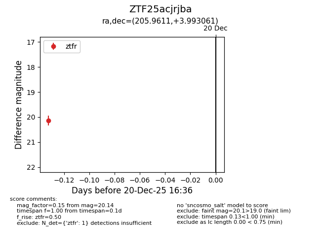
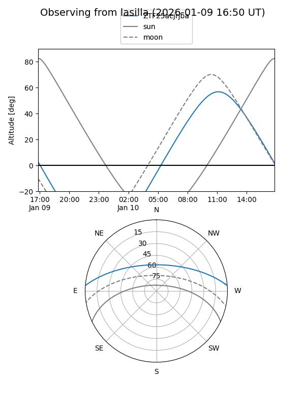
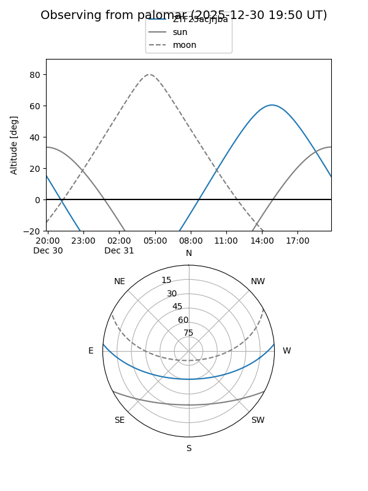

ZTF25acjrjba
Target ZTF25acjrjba at 2026-01-08 10:31
Aliases and brokers:
FINK:
Lasair:
ALeRCE:
alt names
ZTF25acjrjba (ztf,fink_ztf)
Coordinates:
equatorial (ra, dec) = 205.9611,+3.99306
equatorial (HMS+DMS) = 13:43:50.67,+03:59:35.02
galactic (l, b) = (333.6177,+63.69783)
Flags:
Photometry:
last ztfr=20.14
1 ztfr detections
Lightcurve

Visibility


Additional plots